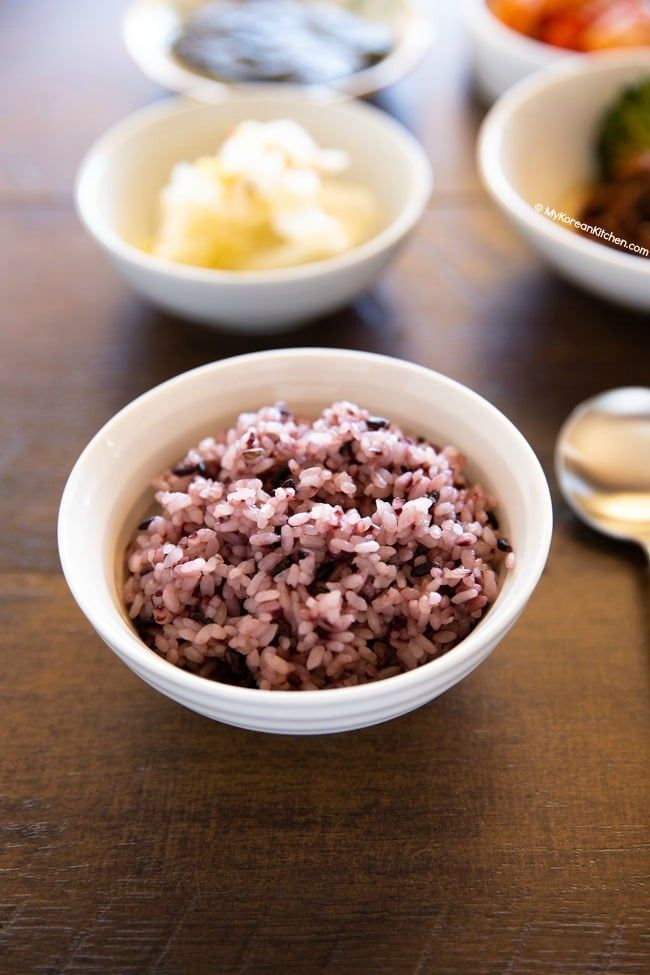

KOREAN PURPLE RICE RECIPE
KOREAN PURPLE RICE RECIPE

Learn how to make Korean purple rice at home! I will show you how to make it using a rice cooker, instant pot and on the stovetop. Korean purple rice is not only pretty to look at, but it also comes with some health benefits!
Today I want to share a frequently requested recipe – Korean purple rice.
WHAT IS KOREAN PURPLE RICE
Korean purple rice is cooked Korean rice that has a purple hue. We call it heukmi bap (흑미밥) in Korean and it means black rice. But why do some people refer it as purple rice instead of black rice?
Essentially they both mean the same thing. The only real difference would be the shades of rice depending on how much black rice you add to your base rice (i.e. white rice) when cooking. The color shades of purple can be light to deep dark purple.
Though, it’s quite rare to see Koreans cooking with black rice only. Rather, we blend black rice with short grain (or medium grain) white rice.
Overall, I follow the below ratio for my purple rice.
1 cup short grain white rice + 1 1/2 tsp black sweet rice – 2 to 3 serves
2 cups short grain white rice + 1 Tbsp black sweet rice – 4 to 5 serves
By all means, you can change the ratio per your liking. Just do some experiments until you find your sweet spot. Keep in mind that changing the ratio will affect the overall texture, taste and cooking time of the purple rice.
I have also tried making the purple rice with (long grain) Jasmin rice and I don’t think the result is as good as when I used short grain white rice. (Just my two cents!)
Newer Post >
Shop these ingredients at Kimchi Mart
Six stores across South Florida — or order online and pick up in an hour.